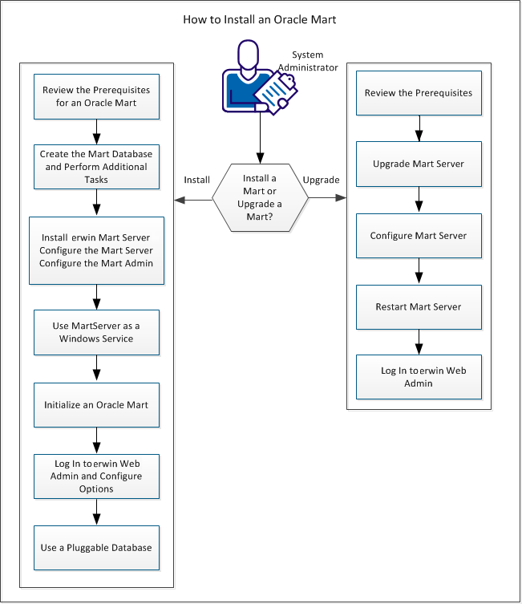

erwin DM connects to your Mart database through through a web server. The Mart comprises the following components:
Stores the user data for the Workgroup Edition. You can use a supported or certified version of Oracle, SQL Server, or PostgreSQL database. Ensure that you use a new database and not an existing one that was created for an older version of the data modeling tool.
Includes a web-based component, erwin Mart Administrator, that helps you manage the Mart through a web console.
Hosts erwin Mart Administrator. You can use a web server of your choice. If you have not installed a web server, use the erwin Mart Server option and install Tomcat.

To install and configure erwin Mart Server, follow these steps: